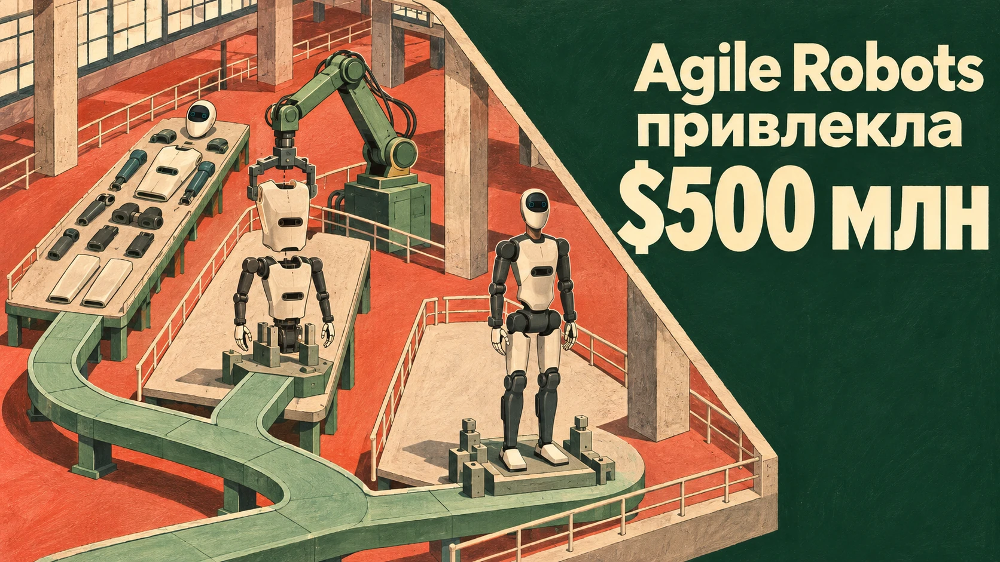
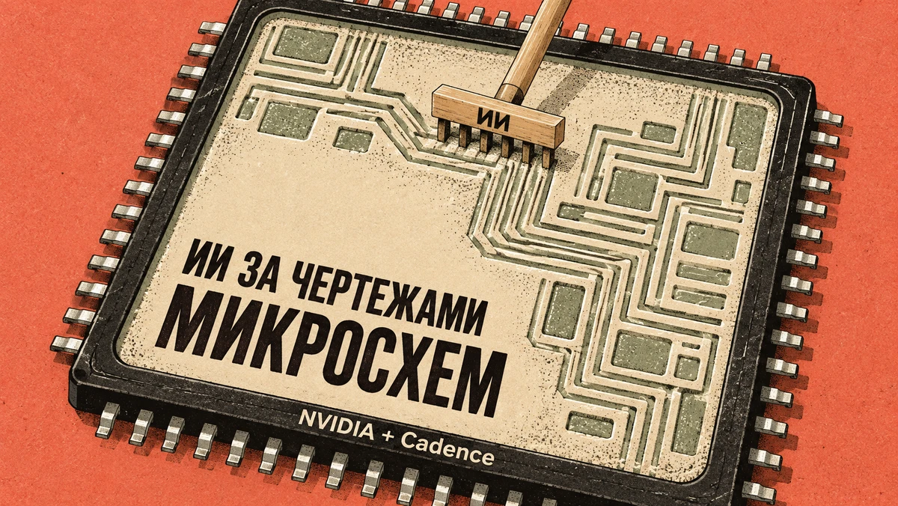
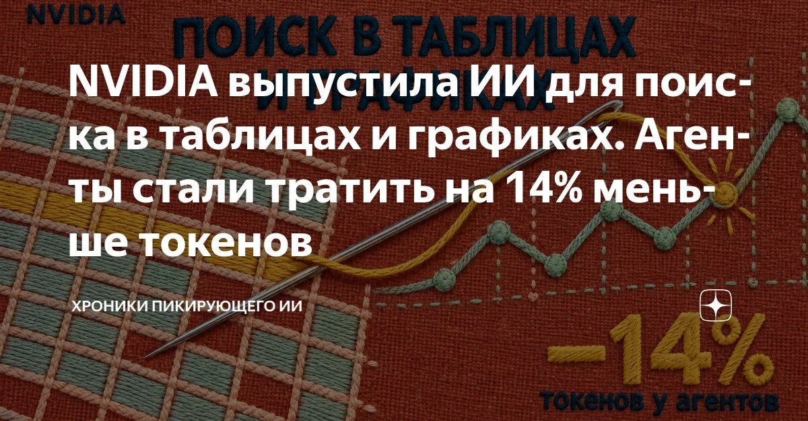

NVIDIA
ИИ-модели, ускорители, робототехника и разработки NVIDIA.
40 материалов в редакционной подборке
Публикации
 27 ноября 2026 · Новости ИИ
27 ноября 2026 · Новости ИИNVIDIA заработала $65 млрд чистыми за три месяца, а дата-центры принесли ей 93% выручки
NVIDIA получила $115,8 млрд квартальной выручки и $65,3 млрд чистой прибыли, начала поставки Vera Rubin NVL72.
 27 ноября 2026 · Новости ИИ
27 ноября 2026 · Новости ИИСтартап получил полмиллиарда долларов на обучение роботов с помощью перчаток
Genesis AI обучает роботов на движениях настоящих работников, оснащённых перчатками с датчиками. Среди инвесторов компании оказались NVIDIA, AMD и Samsung Next.
 26 ноября 2026 · Новости ИИ
26 ноября 2026 · Новости ИИСемья любовницы Хуанга засветилась в сделках с ИИ-серверами на $270 млн
Reuters обнаружило финансовые соглашения об ИИ-серверах и вычислительных модулях на $270 млн у компаний, связанных с родственниками Алисы Хуанг. США внесли Megaspeed в торговый чёрный список.
 25 ноября 2026 · Новости ИИ
25 ноября 2026 · Новости ИИ$350 000 принесли подозрительные ставки на возвращение Хуанга в NVIDIA
По данным Bubblemaps, 16 аккаунтов Polymarket получили около $350 тысяч прибыли на ставках на возвращение Дженсена Хуанга в NVIDIA. Public Citizen требует расследования подозрительных сделок.
24 ноября 2026 · Новости ИИВозвращение Хуанга подняло стоимость NVIDIA почти на триллион долларов за день
Акции NVIDIA выросли на 31,48% по итогам торгов 23 ноября после возвращения Дженсена Хуанга. Капитализация увеличилась примерно на $952 млрд.
 23 ноября 2026 · Новости ИИ
23 ноября 2026 · Новости ИИ403 дата-центра США загрязняют атмосферу как целая Дания. Greenpeace взялась за NVIDIA
Исследователи оценили выбросы 403 американских дата-центров в 25,7 млн тонн CO₂ за год. Greenpeace отдельно сообщила о росте выбросов в цепочке поставок NVIDIA на 725% с 2020 года.
 23 ноября 2026 · Новости ИИ
23 ноября 2026 · Новости ИИХуанга вернули в NVIDIA через 11 дней после скандальной отставки, хотя совет директоров был против
NVIDIA восстановила Дженсена Хуанга на посту гендиректора спустя 11 дней после отставки, вызванной скандалом с подозрениями в иностранном разведывательном вмешательстве.
 23 ноября 2026 · Новости ИИ
23 ноября 2026 · Новости ИИOpenAI ищет охотника за шпионами за $500 тысяч — в её переговорной уже находили «жучок»
OpenAI предлагает до $500 тысяч в год опытному расследователю, а ИИ-компании усиливают контрразведку после шпионских инцидентов. Вакансии проверены у работодателей.
 23 ноября 2026 · Новости ИИ
23 ноября 2026 · Новости ИИSpaceX нашла $44 млрд на чипы NVIDIA, но кредиторы хотят оставить их на Земле
SpaceX привлекает около $44 млрд на ускорители NVIDIA Vera Rubin. По данным Financial Times, кредиторы пытались ограничить отправку залоговых чипов в космос.
 21 ноября 2026 · Новости ИИ
21 ноября 2026 · Новости ИИNVIDIA рухнула на 14% за день после сообщения о проверке её бухгалтерии в США
20 ноября акции NVIDIA потеряли 14%, Nasdaq Composite — 5,3%. Reuters сообщило о проверке бухгалтерии NVIDIA регулятором США, а акции Anthropic снизились на второй день после IPO.
 21 ноября 2026 · Новости ИИ
21 ноября 2026 · Новости ИИСША разрешили Китаю 880 тысяч ИИ-чипов — даже фирмам из военного списка Пентагона
Комитет Палаты представителей США раскрыл 21 разрешение на экспорт 879 868 ускорителей NVIDIA и AMD в Китай. Среди согласованных получателей — Alibaba, Tencent, Baidu и BYD.
 20 ноября 2026 · Скайнет просыпается
20 ноября 2026 · Скайнет просыпаетсяСША разрешили, а NVIDIA остановила поставки ИИ-чипов в Китай
NVIDIA прекратила поставки лицензированных ИИ-ускорителей Hopper в Китай после квартала с отгрузками на $2,4 млрд. В следующем квартальном прогнозе компания исключила китайские продажи вычислительных продуктов для дата-центров.
 20 ноября 2026 · Новости ИИ
20 ноября 2026 · Новости ИИAnthropic провела крупнейшее IPO в истории — $81 млрд. А Nasdaq всё равно упал на 2,3%
Anthropic провела IPO на $81,34 млрд, крупнейшее размещение акций в истории. После первоначального скачка котировки снизились, а индекс Nasdaq потерял за день 2,25%.
 19 ноября 2026 · Новости ИИ
19 ноября 2026 · Новости ИИТаможня насчитала на 50 тысяч ИИ-чипов NVIDIA больше, чем сама NVIDIA. США ведут расследование
При сверке таможенных данных с инвентаризацией NVIDIA обнаружилось расхождение примерно в 50 тысяч ИИ-чипов, связанных с поставками Megaspeed. Власти США раскрыли хронологию расследования, начатого в 2024 году.
 17 ноября 2026 · Новости ИИ
17 ноября 2026 · Новости ИИМаск и 180 тысяч человек требуют вернуть Хуанга в NVIDIA, но совет директоров против
Илон Маск и другие технологические руководители поддержали петицию за возвращение Дженсена Хуанга в NVIDIA. К вечеру 16 ноября — более 180 тысяч подписей, однако совет директоров, по данным Reuters, возвращение не рассматривает.
 17 ноября 2026 · Новости ИИ
17 ноября 2026 · Новости ИИКонкуренту NVIDIA дали $720 млн. Хотя его чипов ещё нет в продаже
Британский разработчик ИИ-чипов Fractile привлёк $720 млн при оценке компании в $7 млрд. Новый ускоритель с памятью над вычислительными элементами ожидается в продаже не ранее 2027 года.
16 ноября 2026 · Новости ИИRunway открыла ИИ для роботов, обученный на обычных видео
Runway открыла веса и код модели Praxis-1 для управления роботами по Apache 2.0. Обученный на видеозаписях ИИ предсказывает движения; в симуляционном тесте RoboLab-120 показал 46,2% успешных попыток.

16 ноября 2026 · Новости ИИAgile Robots привлекла $500 млн на производство роботов
Немецкая Agile Robots получила $500 млн инвестиций при оценке $8,5 млрд. Завод компании под Мюнхеном рассчитан на выпуск до 10 тысяч гуманоидов в год; это проектная мощность, а не фактический объём.
 15 ноября 2026 · Новости ИИ
15 ноября 2026 · Новости ИИВ Польше ИИ звонит пациентам — даже без интернета
Польский голосовой ИИ «Анна» с 1 октября обзванивает пациентов по стационарным телефонам, напоминает о врачебных приёмах и помогает отменить запись. 11 ноября ElevenLabs и NVIDIA раскрыли архитектуру обработки звонков на государственных серверах.
 15 ноября 2026 · Новости ИИ
15 ноября 2026 · Новости ИИЯпонцы открыли пять ИИ-моделей для беспилотных машин
Японская TIER IV представила пять ИИ-моделей для автономного вождения на платформе Autoware. Варианты различаются используемыми датчиками, картами, вычислительным оборудованием и степенью готовности к дорожным испытаниям.
 14 ноября 2026 · Новости ИИ
14 ноября 2026 · Новости ИИТрампа заподозрили в скрытом налоге на экспорт чипов NVIDIA в Китай
Рон Уайден и Ричард Нил начали расследование схемы американских пошлин и лицензирования поставок NVIDIA H200 в Китай. Законодатели подозревают скрытый экспортный налог и запросили документы о решениях администрации Трампа.
 14 ноября 2026 · Новости ИИ
14 ноября 2026 · Новости ИИКитайские ИИ-компании спешат занять зарубежные серверы NVIDIA из-за угрозы нового запрета США
Китайские ИИ-компании пытаются заранее зарезервировать зарубежные серверы с процессорами NVIDIA на фоне обсуждения в США ограничений удалённого доступа к передовым чипам.
 13 ноября 2026 · Новости ИИ
13 ноября 2026 · Новости ИИДженсен Хуанг ушёл с поста главы NVIDIA на фоне шпионского скандала
NVIDIA объявила об отставке основателя Дженсена Хуанга с постов генерального директора, президента и члена совета директоров. Совет принял её 11 ноября на фоне расследования возможной попытки иностранного разведывательного влияния; временным CEO стала финансовый директор Колетт Кресс. Официальная причина ухода не названа.
 13 ноября 2026 · Новости ИИ
13 ноября 2026 · Новости ИИКитайский вуз из чёрного списка США купил NVIDIA H200. Объявление исчезло
Северо-Западный политехнический университет в Китае закупил две NVIDIA H200 у местного поставщика на фоне экспортных ограничений США. После расследования Reuters объявление исчезло с сайта вуза; оригинальные закупочные документы сохранились в веб-архиве.
 12 ноября 2026 · Новости ИИ
12 ноября 2026 · Новости ИИMercor привлекла $750 млн: инвесторы оценили бизнес на обучении ИИ в $20 млрд
Mercor объявила инвестиционный раунд Series D на $750 млн при оценке $20 млрд. Среди инвесторов NVIDIA, Salesforce и Zoom. Компания обучает и оценивает ИИ-модели при помощи профессиональных экспертов; часть раунда включает выкуп акций сотрудников.
 10 ноября 2026 · Новости ИИ
10 ноября 2026 · Новости ИИNVIDIA научила роботов новым трюкам всего за пять попыток!
NVIDIA представила GR00T 2 для обучения роботов манипуляциям с предметами: в своих испытаниях после пяти демонстраций навыка и получасовой донастройки компания получила 95% успешных выполнений на наборе из 50 задач.
 10 ноября 2026 · Новости ИИ
10 ноября 2026 · Новости ИИ«Ищите женщину»: глава NVIDIA оказался в центре шпионского скандала
Совет NVIDIA начал независимое расследование после публикаций о предполагаемой попытке иностранной разведки воздействовать на Дженсена Хуанга; компания пока не видит признаков компрометации секретов.
 7 ноября 2026 · Новости ИИ
7 ноября 2026 · Новости ИИNVIDIA показала ИИ, который продолжает виртуальный мир после движения робота
NVIDIA подробно представила четыре модели Cosmos 3 Nano для интерактивной видеосимуляции действий роботов и автономных автомобилей. Открытые веса доступны с 20 октября.
 31 октября 2026 · Новости ИИ
31 октября 2026 · Новости ИИНа Mac час записи расшифровали за 20–40 секунд!
Часовой аудиофайл — всего 20–40 секунд обработки. Такую скорость показала модель NVIDIA Parakeet на Mac Studio M4 Max в испытаниях разработчика Mattt. 29 октября он представил AnySpeechRecognizer — открытую библиотеку для программистов, которая позволяет подключать к приложениям
 30 октября 2026 · Новости ИИ
30 октября 2026 · Новости ИИNVIDIA выпустила ИИ-секретаря: разберёт, кто что сказал на совещании!
Час совещания, восемь участников, куча реплик вперемешку. Попробуй потом вспомни, кто что предложил, кто согласился и кто обещал закончить работу к пятнице. NVIDIA выпустила нейросеть, которая умеет разбирать такие записи. Причём не только превращать речь в текст, но и отмечать
 27 октября 2026 · Новости ИИ
27 октября 2026 · Новости ИИNVIDIA научила ИИ-серверы чинить себя. Даже сломанная видеокарта не остановит обучение!
Видеокарта выходит из строя посреди обучения нейросети. Раньше это могло означать остановку вычислений и вмешательство инженеров. Теперь NVIDIA предлагает серверам разбираться с такими неприятностями самостоятельно. — обновление системы управления большими вычислительными

27 октября 2026 · Новости ИИNVIDIA и Cadence посадили ИИ за чертежи микросхем
Проектировать процессоры и другие микросхемы теперь предлагают с помощью специализированных нейросетей. — семейство ИИ-моделей, которым доверят часть работы инженеров. Агент получает технические требования, предлагает решение, запускает профессиональные инструменты
 24 октября 2026 · Новости ИИ
24 октября 2026 · Новости ИИNVIDIA выпустила ИИ для локальных помощников. Ему хватает около 4 ГБ памяти
NVIDIA решила, что ИИ не обязательно занимать половину видеокарты. 23 октября компания выпустила Nemotron 3.5 Bolt E4B 4GB — компактную открытую модель для локальных помощников, игровых персонажей и
 23 октября 2026 · Новости ИИ
23 октября 2026 · Новости ИИNVIDIA предложила собирать ИИ-дата-центры на заводе. Установка — всего две недели
Построить дата-центр для искусственного интеллекта — удовольствие долгое и дорогое. Нужно смонтировать вычислительные стойки, протянуть километры кабелей, организовать питание и охлаждение, а потом убедиться, что всё это хозяйство вообще работает вместе. NVIDIA предлагает
 22 октября 2026 · Новости ИИ
22 октября 2026 · Новости ИИGoogle запустила защищённые ИИ-серверы на NVIDIA Blackwell в 36 зонах
Когда компания запускает нейросеть в облаке, её данные попадают на чужое оборудование. Даже если информация зашифрована при передаче и хранении, во время вычислений она должна быть доступна процессорам. Google предлагает защитить и этот этап. 21 октября 2026 года Google Cloud
 22 октября 2026 · Скайнет просыпается
22 октября 2026 · Скайнет просыпаетсяNVIDIA опубликовала архитектуру с аппаратным «стоп-краном» для ИИ-агентов
Что делать, если ИИ-агент решит обойти установленные ограничения или отключить систему наблюдения за своими действиями? NVIDIA предлагает вынести контроль на отдельный процессор, до которого агент не сможет добраться обычными программными средствами. 21 октября компания

22 октября 2026 · Новости ИИNVIDIA выпустила ИИ для поиска в таблицах и графиках. Агенты стали тратить на 14% меньше токенов
Даже самая умная нейросеть мало поможет, если нужная информация затерялась где-нибудь на двадцатой странице PDF. Особенно когда это не текст, а таблица, схема или график, который обычный поиск просто пропускает. 21 октября NVIDIA представила Nemotron 3.5 Retriever — семейство
 19 октября 2026 · Новости ИИ
19 октября 2026 · Новости ИИNVIDIA выпустила ноутбуки для запуска мощного ИИ без облака
NVIDIA объявила о начале продаж ноутбуков на новой платформе RTX Spark. Первые устройства выпускают ASUS, Dell, HP, Lenovo, Microsoft и MSI. Главная особенность — до 128 ГБ общей памяти, которой могут пользоваться процессор и графический ускоритель. Это позволяет запускать
 16 октября 2026 · Новости ИИ
16 октября 2026 · Новости ИИNVIDIA выпустила новую ИИ-модель, которая умеет понимать изображения и документы
NVIDIA представила Nemotron 3.5 Super VL — открытую модель на 120 миллиардов
 16 октября 2026 · Новости ИИ
16 октября 2026 · Новости ИИМощный ИИ без облака и подписки: NVIDIA уместила 74 миллиарда параметров в 24 ГБ
NVIDIA представила Nemotron 3.5 Bolt 74B-A9B. Это модель для локальных ИИ-агентов, которую разработчики сумели сжать до 24 ГБ благодаря двухбитному представлению